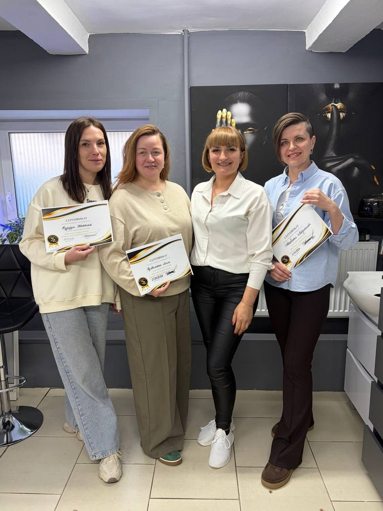
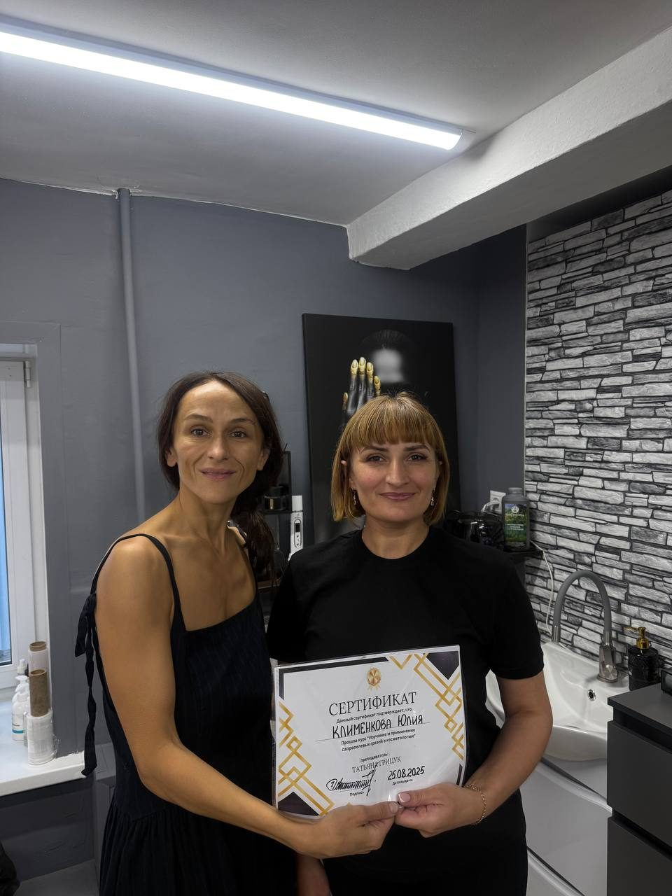
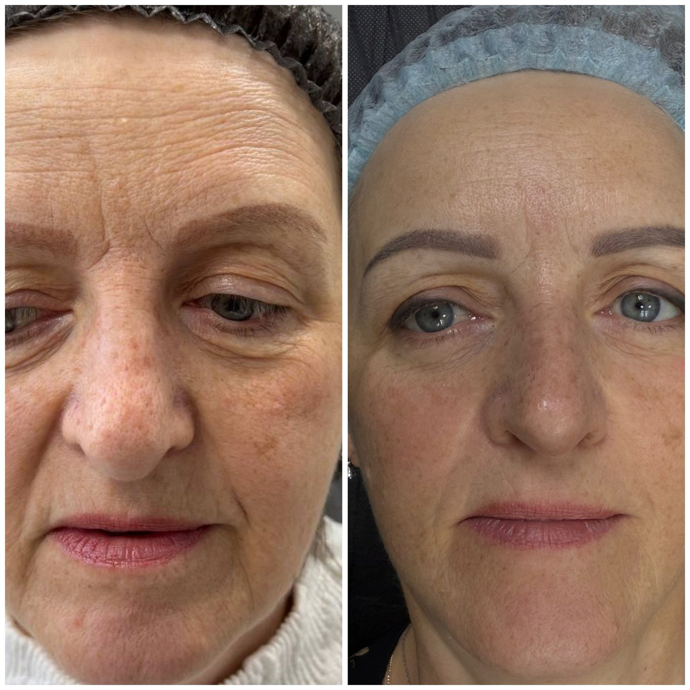
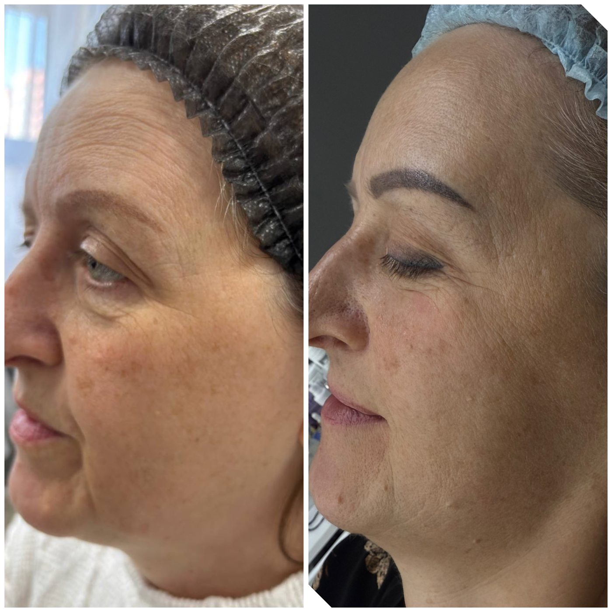
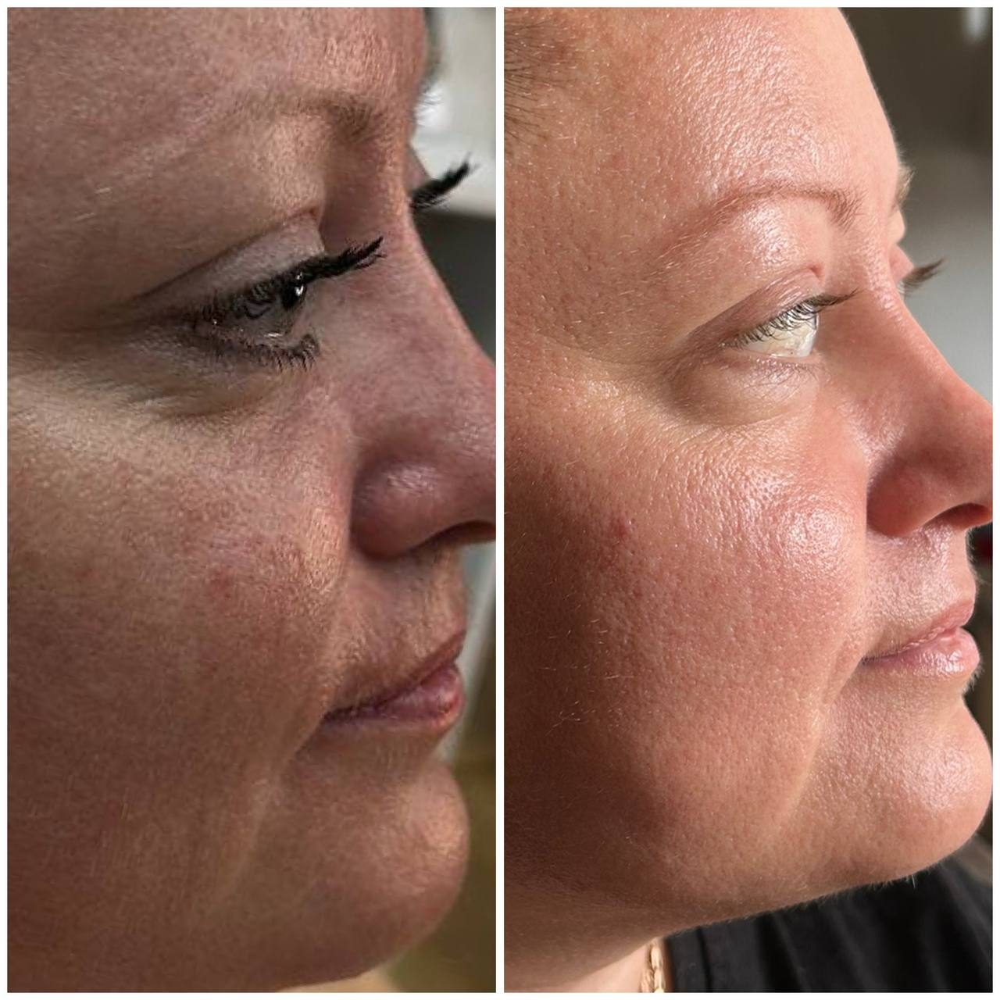
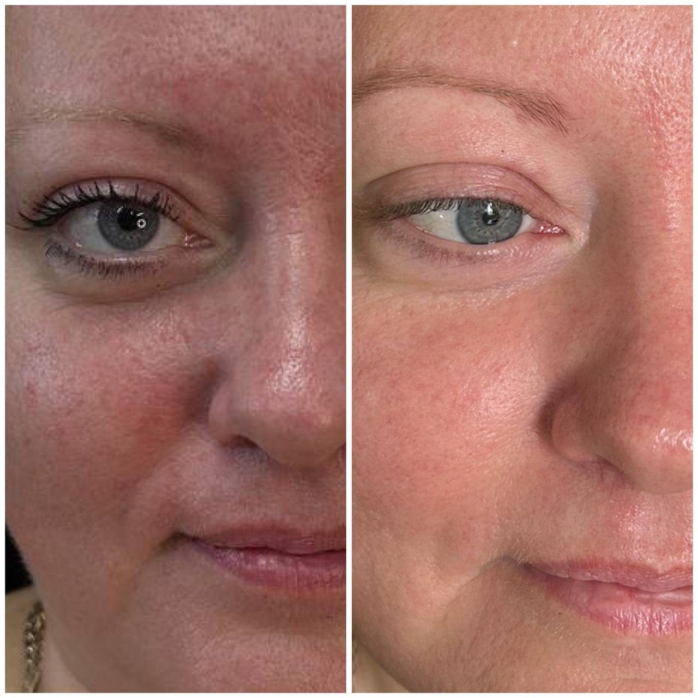

Студии SaproLux
Пять адресов.
Один стандарт ухода.
Сеть студий и кабинетов ООО «СапроЛюкс» в Беларуси: продажа продукции, процедуры для лица и тела, консультации мастеров и обучение.
Сеть SaproLux
Продукт, процедура
и обучение — вместе
Студии SaproLux работают с продукцией производства «БиоСапропель». Это позволяет выстраивать уход на понятной основе: сырьё, документы, протоколы процедур и обученные мастера.
В каждой студии можно получить консультацию, пройти процедуру и приобрести продукцию. Точную программу, длительность и стоимость уточняйте при записи.
в Беларуси
сервиса
и обучение

Студии SaproLux · БеларусьАдреса
Выберите студию
Нажмите на адрес, чтобы посмотреть детали, телефон и построить маршрут.
01 Брестул. Московская, 253 Студия SaproLux

Студия сети SaproLux: консультация мастера, уход за лицом и телом, продукция «БиоСапропель».
02 Кобринул. Дружбы, 2, помещение 6 Студия SaproLux

Студия в Кобрине: процедуры для лица и тела, подбор домашнего ухода и продукция SaproLux.
03 Барановичиул. Тексер, 4А Студия SaproLux

Студия в Барановичах: уход за кожей лица и рук, консультация по продукции и запись на процедуры.
04 Минскул. Будённого, 23 Студия SaproLux
Минская студия SaproLux: процедуры для лица и тела, консультации и продукция производства «БиоСапропель».
05 «Альфа-Радон» / «Паникава»2-й этаж, кабинет 218 Кабинет SaproLux

Кабинет SaproLux в санатории «Альфа-Радон»; ориентир — ТЦ «Паникава», 2-й этаж, кабинет 218. Точный вход и порядок посещения уточняйте при записи.
Адреса и режим работы уточняйте у администратора SaproLux. Запись и покупка продукции — через ООО «СапроЛюкс»: +375 29 701-10-88, +375 44 537-75-75.
Услуги
Уход с фотографией,
эффектом и записью
Лицо
Маска для лица
Очищение, питание и тонизирование кожи. Мастер подбирает состав и время выдержки.
Эффект: мягкое очищение и уход Записаться
Лицо и шея
Лицо, шея, декольте
Комплексный уход с сапропелевой массой. Подходит для подготовки кожи к событиям.
Эффект: увлажнение и свежий вид Записаться Тело
Тело
Обёртывание для тела
Сапропелевое обёртывание с последующим уходом. Программа подбирается индивидуально.
Эффект: тонус и уход за кожей Записаться
Руки
Маска для рук и стоп
Питательный уход за кожей рук и стоп. Особенно актуален в холодный сезон.
Эффект: питание и смягчение Записаться SPA
SPA
Комплексный ритуал
Несколько этапов ухода в одной программе. Состав и последовательность определяет мастер.
Эффект: отдых и уход за кожей Записаться Волосы
Волосы
Волосы и кожа головы
Уход с сапропелевой косметикой. Подбирается под состояние кожи головы и волос.
Эффект: очищение и уход ЗаписатьсяТочная длительность, стоимость и противопоказания — у администратора студии. Цены и программы могут отличаться в зависимости от города.
Результаты
До и после
без обещаний чуда
Фотографии предоставлены клиентами студии и публикуются с их согласия. Результат индивидуален и зависит от исходного состояния кожи, программы и регулярности ухода.

До
ПослеУход за лицом
Курс с сапропелевыми масками. Фото до и после — при одинаковом освещении, без ретуши.

До
ПослеКурс ухода
Индивидуальная программа. Публикация согласована с клиентом; результат не является медицинской гарантией.
Противопоказания: острые воспалительные процессы, повреждения кожи, онкологические заболевания и другие состояния. Перед процедурой необходима консультация мастера и, при необходимости, врача.
Запись · SaproLux
Выберите студию
и запишитесь
Пять адресов в Беларуси. Продажи продукции, процедуры и обучение — через ООО «СапроЛюкс». Производство продукции — ООО «БиоСапропель».